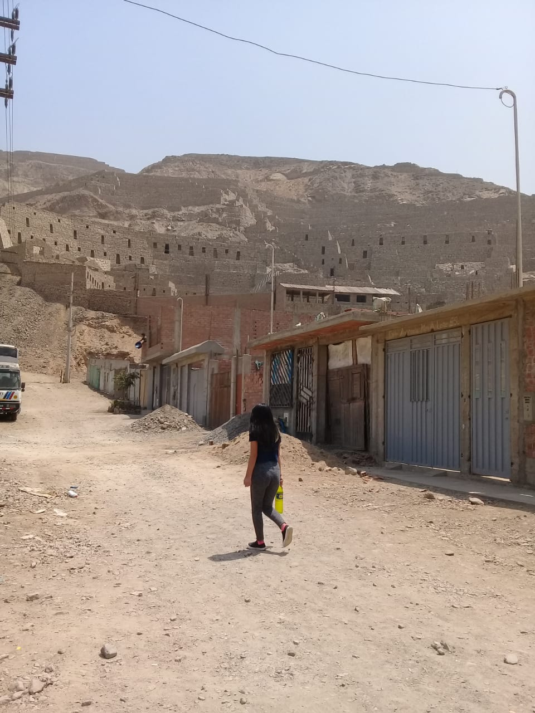

MANCHAY, BARRIADA EMBLEMÁTICA DEL SIGLO XXI Manchay, en quechua significa miedo, gran asentamiento en una vasta quebrada de cerros pedregosos, inhóspita, árida y arenosa, surgido en la década de 1980 y saltó a la fama en la del 2000, es hoy un emblema de la pobreza urbana y de los esfuerzos por superarla. Era un páramo famoso porque en sus lomas secas los domingos muchos limeños practicaban motocross, carreras de autos. No le interesaba que los constructores de la gran Lima explotarán sus suelos llevándose toneladas de arena, cascajo y piedras y dejarán miles de oquedades. Comenzó a poblarse con las familias de trabajadores de construcción civil de La Molina y de Cieneguilla, desde la década de 1960 y luego por agricultores que pasaban por ese lugar desde las chacras de Pachacámac para vender sus productos al mercado limeño de La Parada. Ubicado a 24 kilómetros al sureste de la gran Lima, entre 400 y 1000 m.s.n.m. el núcleo denominado el Centro Poblado Rural Huertos de Manchay fue creado por 13 dirigentes el 8 de marzo de 1983. Las familias vivían bastante aisladas unas de otras y cuentan sus primeros pobladores que durante las noches corría fuerte viento y sucedían cosas raras, como pasos de mucha gente. El saber popular relata que en esa zona se castigaba a los esclavos de las haciendas vecinas, y que por ahí pasó un brazo del ejército chileno, hubo un enfrentamiento y muchos muertos. Más allá de la leyenda, el grueso de los pobladores de Manchay procede de una guerra interna, la de la década de 1980, cuando el terrorismo arreciaba en Huanta y Ayacucho. Numerosas familias huyeron de la violencia, pobreza y el abandono, y sus primeros hogares fueron los restos de los viejos tranvías limeños desechados en su ambiente desértico. Fue elegido como refugio de los “desplazados” por su absoluta marginalidad no sólo física (“aquí nadie nos va a encontrar”), sino también social por el olvido absoluto en que vivían. Los desarraigados la fueron poblando gradual y silenciosamente. En 1990 ya era un pueblo grande donde se hablaba quechua y se trabajaba en paz, pero donde había carencia de todo. Su suerte va a cambiar en 1996 cuando el arzobispado de Lima nombra párroco al sacerdote jaujino José Chuquillanqui y decide considerar la zona como proyecto de su labor social. Desde entonces no solo se inicia la organización de los pobladores en torno a algunos proyectos comunales, sino que también en el nombre de Manchay y sus desplazados llega a los medios de comunicación y a la política. Entonces se instalan algunos programas de gobierno. Pero su celebridad llegará en el 2002 cuando el candidato a la alcaldía de Lima, Luis Castañeda Lossio, reta a debatir al alcalde de Lima Alberto Andrade, quién tentaba la reelección. “Vamos a Manchay, a ver si has hecho obra”, lo desafía públicamente, mientras que el alcalde responde “Manchay quieres, Manchay te voy a dar”. Castañeda sale vencedor y le presta especial atención al escenario de su encumbramiento. Empiezan las obras básicas. Luego vino el gobierno central con infraestructura y también otros organismos privados. En suma, Estado y sociedad civil movilizados en torno a este ícono visible de la pobreza. Matos, J. (2016). Perú: Estado desbordado y sociedad nacional emergente. Universidad Ricardo Palma / Editorial Universitaria: Lima. pp.479-480.
Salimos un Viernes a las 9.30am , dos personas , con mochilas llenas de frutas en mi caso lleve uvas, mandarina . El recorrido seguimos las avenidas del la molina , la planicie y subida cieneguilla ese es el primer tramo ... tramo de pura subida y trafico por partes ... es dura y agradable el aire esta lleno de carros por partes y micros con olor a aceite quemado. Llegando a Cieneguilla hay que cortar camino debido a que estan haciendo trabajos en las pistas es la oportunidad de hacer un ride limpio de carros y trafico ... El camino clasico para entrar por manchay esta cerrado asi que hay que buscar el otro corte.
El segundo tramo es toda la ruta Manchay que es pura bajada hasta llegar al valle de pachacamac . En esa ruta se aprecia la pista nueva y en construccion un trafico de carros regular y puro cemento mas casas de cemento cerca a la avenida y casas de material noble por los cerros ..
Se a poblado en los ultimos años ... pero todavia falta mucho por hacer...
El tramo final es desde el valle de pachacamac y salida a la playa es plano pasas por la plaza de pachacamac hasta el puente de san pedro cruzando por la carretera y volteando por plaza vea . El problema fue el regreso por estos tiempos covid no puedes coger un carro de regreso asi que es mejor que tomes tus precauciones ... Regresamos como a las 6pm pedaleando con frio y polo mojado por la carretera y esperando que nos lleve un taxi...